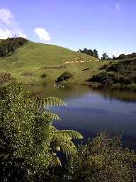
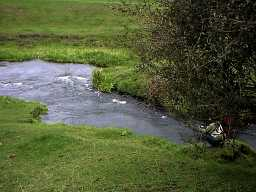
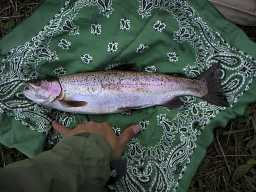

釣行日誌 ＮＺ編
５月 ダム湖にて 文句無しの敗退
2000/05/01 (MON)
ハミルトン・アングラーズ・クラブのミーティングに参加。顔なじみのジムさんから、タラウェラ湖でニジマスの大物を釣り上げた話を吹聴され熱くなる。（笑） こちらでは夜釣りがＯＫなので、新月の夜などはけっこう湖岸が賑わうらしい。
今回のミーティングのゲスト、ニュージーランド航空主催のソルトウォーターフライ世界選手権に出場した地元の腕っこき２名のゲストトークを拝聴する。ラインの規定は１，２，３，４，５，６kgの各リーダーを使ってどれだけの大物をつり上げるかを競うらしい。一日のセッションで釣ったカウワイが100尾以上と聞いて驚く。
次のゲストトークはタウランガをベースにフライタイイングのマテリアルを開発販売しているシュアーストライク社の社長さん。フロートチューブを使った湖の釣りを聞かされて熱くなる。（笑）その他、山で大雨にたたられ、山小屋に閉じこめられた話など、楽しい話が盛りだくさんであった。
2000/05/06 (SAT)

その社長さんの話に熱くなり、車を走らせること１時間半。山あいのダム湖にやってきた。
最初はルアーロッドにプラグを結んで様子をうかがう。形状は細長く、言ってみれば幅100mのスプリングクリークと言った感じ。湖底には藻が繁茂し、砂地と藻の際を鱒が回遊している。何尾か大物を目撃するが、とても警戒心が強い。
松の木の広場の下、水辺の藪の際にひときわ大きなブラウンが定位している。丸々と太って８ポンド、65cmくらいはありそう。ふわっと浮上してぱっくりルアーをくわえる様子を夢想するが、5cmのフローティングプラグなんかを投げ込んだ日には着水音だけで逃げてしまう。（笑）
さりとて狙い撃ちのキャストでニンフを投げ込もうとすると思った場所には投げられない！ というジレンマで、帰途の支流を合わせても初のボウズを食らう......。見えている魚は釣れんわい。しかし、あの湖は再挑戦する価値はあるな。
2000/05/07 (SUN)
ハミルトン在住のＮ君と電話で話す。週末は近場に行く相談がまとまる。わくわく。
2000/05/12 (FRI)

Ｗ川、上流の橋から牧場伝いに下流へ少し降りたところから始める。Ｎ君はドライ、私は最初はドライ、その後、アタリがないので昨日買い込んだカディスニンフで攻める。ニンフに変えたトタン、淵の尻から元気なニジマスがマーカーを沈め、華麗なジャンプを魅せてくれた。約30cmの大きさだが、とてもアクティブな戦いを披露してネットに収まった。
橋近くの荒瀬で３回ニンフで掛ける。どれも急流に入り込まれ、最後は藻で外される。同じ魚かもしれない？
柔らかいロッドを引き絞るニジマスの脈動が心を痺れさせる。
2000/05/13 (SAT)
やや遅れて昼頃から別のＷ川へ。いろいろ迷ったが橋から下流に入る。ドライに出た小さなニジマスが嬉しいが、取り込みに苦労する。魚は多いが非常に釣りにくい。深い河床の泥、密生した藻、複雑な流れ、気むずかしい鱒。
しかし、日本から持ってきた4/5番のパックロッドがとても役に立った。軽く、柔らかく、短い竿でスプリングクリークを釣るのは格別面白いものである。出てくる魚も日本並みのサイズなので安心して遊べる。（笑）
2000/05/20 (SAT)
朝寝坊したものの気を取り直して南に向かう。ケンブリッジのパン屋で絶品のシーフードサンドを買い込み、さらに南下。いくつか川を見て回った後、一番渓相の良さそうなＷ川に入る。
川に降りて竿を組み、静かに歩き出したものの、瀬のアタマにいた大物を脅かしたようで50cmほどの魚影が走り去った。流木が沈んだ瀬の流れ込みにドライフライを流すと、至る所から大きな頭がぬっと突き出てフライをくわえる。しかしいずれも早あわせで失敗する。三度目の正直で出た鱒はしっかりフッキングし、乱闘にもつれ込まれる。竿が柔いので取り込みに苦労する。何しろかろうじてこらえるだけで、手前に寄せることができないのだ。30mほど下流でようやく取り込む。50cmのオスのニジマス。体側の虹色が美しい。体高がとても高く、幅広のがっしりした鱒であった。
その上手の淵では30cmほどの鱒がしきりに餌を捕食しているがフライに出ない。さらに１メートル上の巻き返しでも大物が見えたが喰わない。このポイントでは、わずか二十メートルの区間に６尾ぐらいの鱒がいたようだ。
500mほど遡行するが、めぼしいポイントがなくなったので下流に戻り、車から500mほど下流で再度、勝負を始める。ダラダラの早瀬が多い渓相であり、なかなかポイントが無い。おまけに流速の早い瀬を、上流に向けて歩きっぱなしなので足がとても疲れる。両岸は藪で歩く余地が無いのだ。数百メートル上がると肩で息をするようになる。
ガイドブックに記載されていたこの川の魚の数の多さと大きさの理由がわかった。釣れる区間がほとんど限られており、その他のポイントは密生した藪で保護されているのである。（笑）
苦労しながら遡行し続け、たるみに流したアダムスをぱっくりくわえ、30cmの鱒が元気良く走る。綺麗なヒレの高校生サイズであった。
疲れ切って、最初に釣り始めたポイントに戻り、例の淵の前で遅いランチをとる。サンドイッチがうまい。水温12度にもかかわらず、14番くらいのうすい茶褐色のフライがしきりに羽化している。それをツバメが縦横無尽に飛び回って見事に捕食する。
太陽エネルギー→プランクトン→水生昆虫→鱒・ツバメというような生命の輪廻を目の当たりにしながらサンドイッチを頬張るのである。
自分が死んだらこの辺の山に土葬してほしいと思う。浅く掘って。
すると。
目の前の淵の流れ出しの深みで赤い頬を水面に出して、胸がドキドキする大きさの虹鱒がライズした。
『あっ、あんなとこでライズが始まった！』
と見ていると、水中、水上問わず流下物は手当たり次第に喰っている模様。一度は仕舞いかけたロッドに再度ラインを通し、アダムスを結ぶ。体制の良い右岸に渡ってからキャストするが、手前の流速が早いのでフライがうまく流れない。興奮して振りかぶると後ろの藪にフライを引っかける。あらためて俺は下手だなぁと思い知らされる。
ダメモトでもとの位置に戻りやや上流から流すと、水底の影はふらっと動いてパックリ喰った。
早期・晩期のアダムス、盛期のロイヤルウルフ、ドライフライはこれだけでいいような気がしてくる。錯覚だけど。
ドスンと合わせて格闘が始まり、淵の中でしばらく堪えているとよいしょっとジャンプを魅せる。そして下流へ突進し、日本製の4/5番のパックロッドを軋ませながら抵抗する。なんとか取り込み、下顎にがっちりかかったアダムスを外す。

草の上に横たえた鱒の後頭部をナイフで突き、とどめを刺す。
帰宅後、バター焼きにする。胃の中から淡水産のクレイフィッシュ（ザリガニ？）のハサミの一部が出てきたのには驚いた。大きな鱒はクレイフィッシュが好物なのだそうだ。ニュージーランドの鱒を食べるのは初めてなのだが、その美味なこと、脂の少ないことと身の引き締まっていることに驚いた。
2000/05/26 (FRI)
山岳渓流へ。午後３時から５時半。水温とても冷たい。（笑）
夕方小さなメイフライのハッチあり。橋から牧場の柵沿いに上流へ行くが、芳しいポイントが少ない。とって返して下流もあまり良くない。
もっと上流でないとダメかもしれない。痛恨のボウズ。
釣行日誌ＮＺ編 目次へ
サイトマップ
ホームへ
お問い合わせ